Donate Now
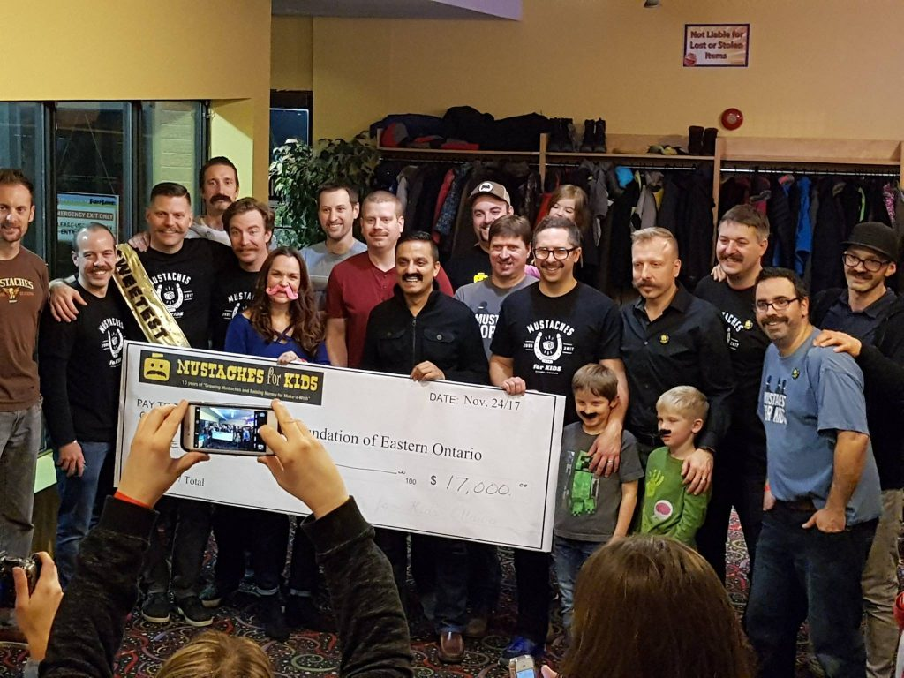
This year marked our 13th year growing and raising money for Make-a-Wish Eastern Ontario. We raised $16,000 this year, bringing our all-time total contribution to $258,000.
A mustache would be nothing without the upper lip:
- Thank you to our diligent and dashing organizers: Mike Hollingworth, Trevor Kealey, and Brett Tackaberry
- Thank you all our growers. Each and every one is gem.
- Thank you to all our donors.
- Thank you to the Rebel.com Team and Rebel.com for matching donations.
- Thank you to Steve Palmer for the sweet t-shirt design. Steve is a co-founder of our M4K group and an all-around swell guy.
- Thank you to John Kealey and Kyle Megill from Studio Nohands for producing our video.
- Thank you to Funhaven for hosting our stache bash.
December 3rd, 2017 by Brett Tackaberry
Every year I am blown away by the impact our efforts have on the families we help. Here are a few stories of the wishes we gave.
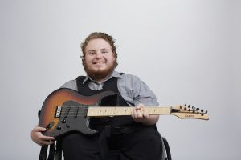
Robyn’s Wish To Have a Custom made Electric Guitar!
Robyn, 17, is a bright and intelligent young man who suffers from Caudal Regression Syndrome and Central hypoventilation. However Robyn doesn’t let his condition deter him from doing the things he loves most like music and playing guitar. Robyn is very passionate about music and his dream is to be one day a professional musician.
Robyn only had one wish: To have a custom made electric guitar with an amplifier. Robyn’s wish came true at a special Make-A-Wish family event. Robyn was invited on stage to play guitar and was joined by Iron Man to the sound of Black Sabbath, one of his favorite group. Robyn’s wish was revealed and he was presented with a custom made Carvin guitar and amplifier! Robyn performed a couple of songs for everyone to enjoy.
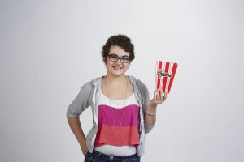
Briana’s Wish To have a London themed Movie Room!
Briana, 13, Aplastic Anemia, I wish to have a…London themed movie theatre room!
When we first met Briana she had been in isolation for several months and still had many to go. She discussed that she absolutely loved watching movies and would love to have a place to call her own to just be able to hangout and forget about everything.
On Wednesday Feb 10th on Briana’s birthday a team came in to make Briana’s wish come true!
Briana spent her 13th birthday at her grandmother having no clue that her basement was being transformed into a London themed theatre room. We had included and projector, screen and had theatre style seats. Not to mention the movie popcorn machine, cotton candy machine and much more!
Once the clock stroke 4:30pm the time had arrive for the big reveal. As soon as she came down the stairs and opened the door she was speechless. Something mom and dad do not see often. She stood there observing everything wondering how this all happened. After about 15 minutes Briana was her old self again walking around the room noticing every little detail and commenting on everything she saw in the room. She could not believe her eyes. “This is much more than I could have ever imagined!” said Briana. Absolutely amazing!!
“Briana had a friend over the following weekend after the reveal… She really enjoyed it!!! We have also enjoyed it as a family. We pretty much have pizza and a movie followed by popcorn every Friday. We can’t thank you enough for all your hard work in fulfilling Briana’s wish. We hope you know just how much we appreciate the time you have taken for our Briana to make her happy and feel extremely special.” Briana’s mom

Lincoln’s Wish To go to Disney World!
Lincoln, 6, Leukemia, I wish to go to Disney World!
In January Lincoln received a bone marrow transfusion from his sister. Shortly after that he caught a virus and had to spend another 6 weeks in the hospital in Montreal, away from his family. As you can imagine it has been a difficult time for Lincoln.
Once his was stable we welcomed Lincoln back home and surprised him with his Wish Reveal. We held the party outside to help protect Lincoln from exposure to viruses. His school mates, neighbours and friends came out to celebrate with him.
When Lincoln came outside he looked at everyone and then looked up at his parents and said, “This is awesome, I LOVE being home!” with a huge smile.
On August 21st a big stretched limo came to pick him up to bring Lincoln and his family to the airport. Upon his arrival at the airport the WestJet representative came to greet them and helped them to their flight. Aboard the airplane Lincoln got to go visit the cockpit and pretend to be a pilot. He absolutely loved this part!
“Lincoln had an amazing time. He loved everything about the trip the village the rides the people and the fast pass (no lines) he especially loved all you can eat ice cream. The village was amazing and very well ran. I don’t think there is anything that he didn’t like. His facial expressions on some of the rides were priceless. One thing he did mention was he looked forward to leaving the villa because people break in when we weren’t home and placed presents lol! We would love to give back and possibly one day make someone else’s wish come true. Thank you for everything! Lincoln’s family
October 25th, 2017 by Brett Tackaberry
Its a small idea but we’ve stuck with it, raised a $250k for Make-a-Wish of Eastern Ontario and we’ve looked great doing it.
Join us now as we jump into our new campaign.
A big thanks to John Kealey and Kyle Megill of no hands studio who helped us put together this story.
October 20th, 2017 by Brett Tackaberry
On this previous Friday we threw a heckuva party for a great kid and gave his wish to go to Disney. It was a surprise party at the House of Targ with pinball, perogies and his favourite food…chicken wings. Its a great way to kick off this year’s campaign. We’re going to have a great year!
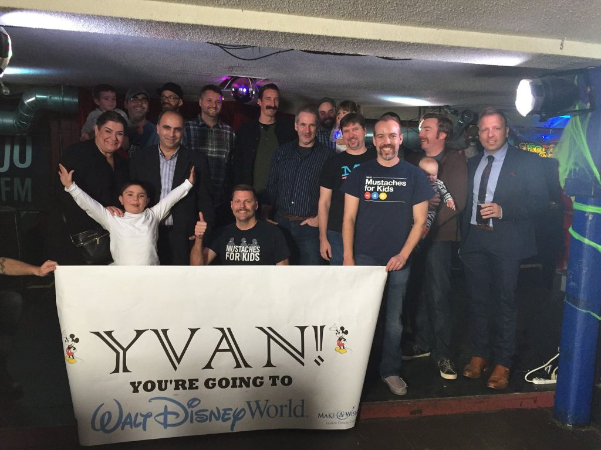
November 1st, 2016 by Brett Tackaberry
Mustaches 4 Kids is just around the corner and we need your help to make this year a great one. Also, no rules again – NO RULES! Have a beard? Go straight to stache, or don’t shave at all. Don’t have any facial hair because you’re a female? PLEASE JOIN US. Alumni? Come back for another kick at the can. NO RULES! NO INHIBITIONS!
Some details about this year’s M4K campaign:
- We’ll be kicking off on Friday, October 28. (aka clean shave day).
- The growing season will wrap-up Bash-style Saturday, November 26
- Register now
Want to submit a work team? Just reach out to me directly, and we can set it up.
Also, take a walk down memory lane and check out past posters and all the sweetest stache winners over the years.
Stay tuned for more stachely updates as we approach clean shave day. If you have any questions, please don’t hesitate to reach out. This year is going to be huge – share the experience with your closest friends and ask them to join you.
And…. get a sweet mustache lego avatar
October 23rd, 2016 by Brett Tackaberry
Year after year, the growers and the donors make Mustaches for Kids a success. That’s why we keep going and why we’ll be back next year.
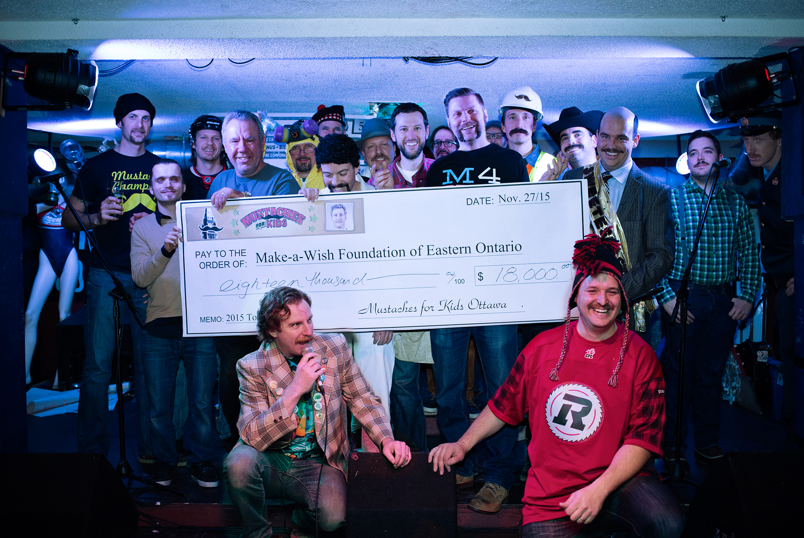
A big thank you to all who grew for M4K and contributed to its success. We’ve raised $18,000 for Make-a-Wish EO and its going to go a long way to enriching the lives of the Make-a-Wish children. We had a lot of money still trickling in after the finale on Friday which really added a lot to the bottom line. This is truly a fantastic thing.
A mustache would be nothing without the upper lip. And with that I want to give a big shout out to my co-orgnanizers Trevor Kealey and Mike Hollingworth. I also want to thank Blake & Josh at the House of TARG. Thanks to M4K co-founder Steve Palmer for the awesome design this year. And finally thanks too to Johnny Kealey for taking video. We have a feature length film due out in Summer 2016.
If you missed it, check out our article on Apt613: Meet this month’s other charity mustache growers.
Stay tuned for next year’s installation of M4K – maybe we’ll just celebrate our 10th anniversary again… again.
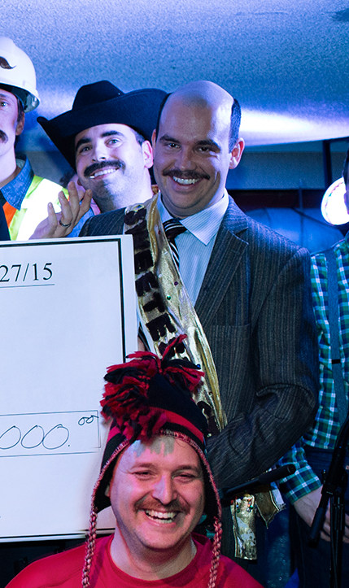And a big mustachey congratulations to Dr. Phil (aka Adam Aldersley) for winning this year’s Sweetest Stache. Its truly an honour – is what we assume he would say if asked.
December 7th, 2015 by admin
This fall in Ottawa, a number of brave souls sacrificed their faces – and dignities – as Growers for Mustaches for Kids. Our goal is to use our pushbrooms to raise $20,000 for the Make-A-Wish Foundation of Canada (Eastern Ontario chapter). Now celebrating its 10th anniversary, the Ottawa chapter has been growing since 2005 and has raised over $200,000.
Stache Bash is at the House of TARG (at the corner of 1077 Bank at Sunnyside) on Friday, November 27 at 8pm sharp. More information can be found on the Stache bash page.
Pledging and Dropping off money
This isn’t all that complicated, here is everything you need to know:
- Bring all your money and pledge sheets with you on Friday. Write your name on the pledge sheet. Have it totaled prior to arrival.
- Please write a cheque for the cash portion of your pledging. This is a nice-to-have and saves us a lot time and effort. Cheques should be made out to Make-a-Wish Eastern Ontario.
- Don’t include donations over paypal on your pledge sheet. At the venue, we will have the total amount pledged to you over paypal.
- For those who pledged to you over paypal, they will get a receipt, we have their information.
- If you can’t make it on Friday, you have a few options:
- drop off your money and pledge sheet to me during business hours at my place of work or on the weekend/evenings to my house – email me for the address and my mobile number
- send money to this email address from online banking.
- send the money through paypal on the site
- mail checks to me. email for the address.
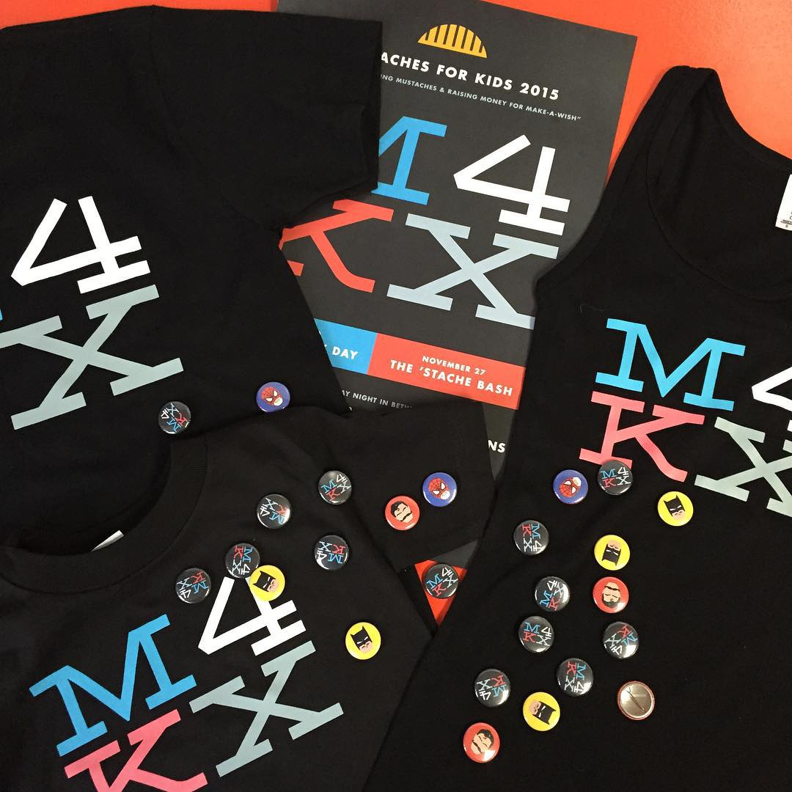
November 26th, 2015 by admin
This year we’re celebrating our 10th anniversary and how big our little M4K has grown – indeed, grown like the proverbial mustache. This year is going to be a blow out and we want EVERYONE to join us. That is why we’re calling off the rules. That’s right – NO RULES! Have a beard? Go straight to stache, or don’t shave at all. Don’t have any facial hair because you’re a female? PLEASE JOIN US. Alumni? Come back for another kick at the can. NO RULES! NO INHIBITIONS!
We need your help to make this year a great one.
Some details about this year’s M4K campaign:
- We’ll be kicking off on Friday, October 30. (aka clean shave day). More info to follow.
- The growing season will wrap-up Bash-style Friday, November 27
- Register now
Want to submit a work team? Just reach out to me directly, and we can set it up.
Also, take a walk down memory lane and check out past posters and all the sweetest stache winners over the years.
Stay tuned for more stachely updates as we approach clean shave day. If you have any questions, please don’t hesitate to reach out. This year is going to be huge – share the experience with your closest friends and ask them to join you.
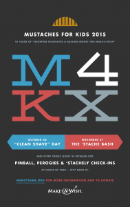
October 16th, 2015 by Brett Tackaberry
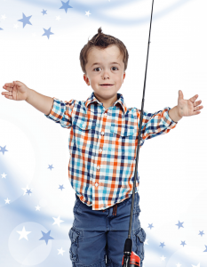I wish to have … a Trailer!
Thomas, 5, suffers from severe sleep apnea also known as Hypoventilation and must receive constant monitoring at night by a registered nurse. Despite this he is a typical little boy who loves camping, fishing, and swimming. He wished to have a trailer so that he and his family could go on camping trips together. We surprised Thomas and his family with a limo ride from their home to an enormous garage hanger. Inside, Thomas found his brand new trailer! He also found another surprise: a brand new fishing rod. Thomas’ family was so grateful for everyone that helped make this wish possible. They have taken many camping trips in the trailer, and Thomas has been out fishing at every chance he gets. Thomas looks forward to all the great adventures they will share together.
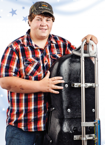I wish to have … An Artificial Rink!
Tyler, 16, suffers from meningococcal meningitis, a medical condition that took both of his legs and has required 18 surgeries. During his health struggles, Tyler found inspiration from Ben Delaney, an Ottawa sledge hockey athlete and amputee who played for Team Canada. Tyler wished for an artificial ice rink so that he could practice sledge hockey. Tyler’s wish was granted, and we surprised him with a special visit from Ben Delaney and his teammate Mark Dorion. Tyler was thrilled to meet his idol, and is inspired to keep practicing sledge hockey on his new indoor rink. Maybe we’ll see Tyler in the Olympics some day!
I wish to go …To London England!
Vinessa is a 12 year old girl from Ottawa who suffers from a severe heart condition. Vinessa wished to go to London, England where her favourite show Dr. Who is made. We surprised Vinessa on her birthday with the news that her wish would be granted. Vinessa is usually shy but she immediately started talking non-stop about everything she would like to do and see in London. On her wish trip, Vinessa loved exploring London and enjoyed the museums, a ride on the London Eye, and of course, a trip to Cardiff for the Dr. Who Experience event! “We really enjoyed the Tower of London private tour and of course Dr. Who Experience was amazing. Thank you so much for this amazing gift,” said Vinessa’s mom. Thanks to the donations of our generous Make-A-Wish supporters, Vinessa’s dream became a reality!
October 13th, 2015 by Brett Tackaberry
A big thank you to all who grew for M4K and contributed to its success. We’ve raised $23,500 for Make-a-Wish EO and its going to go a long way to enriching the lives of the Make-a-Wish children. We had a lot of money still trickling in after the finale on Friday which really added a lot to the bottom line. This is truly a fantastic thing.
A mustache would be nothing without the upper lip. And with that I want to give a big shout out to my co-orgnanizer Trevor Kealey and Mike Hollingworth. I also want to thank Blake, Josh, and Yogi at the House of TARG. Thanks to Ashley Edmunson (at bv02) for the awesome design this year. And finally thanks too to Johnny Kealey for taking the sweet pics you see below.
Join us next year for an extra special “10th Anniversary” edition of Mustaches for Kids!
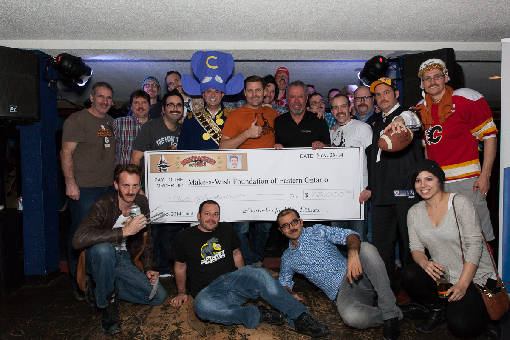
December 3rd, 2014 by Brett Tackaberry
{kind=link}
{kind=link}
{kind=link}
{kind=link}
{kind=link}
{kind=link}
{kind=link}
{kind=link}
{kind=link}
{kind=link}
{kind=link}
{kind=link}
{kind=link}
{kind=link}
{kind=link}
{kind=link}
{kind=link}